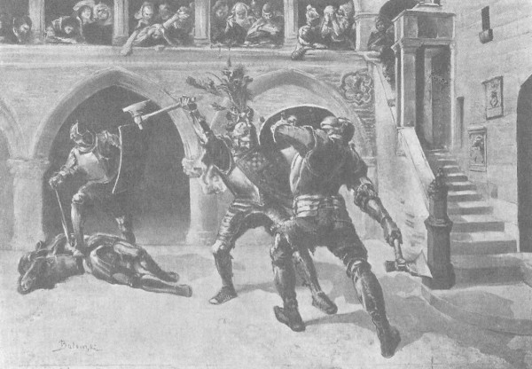
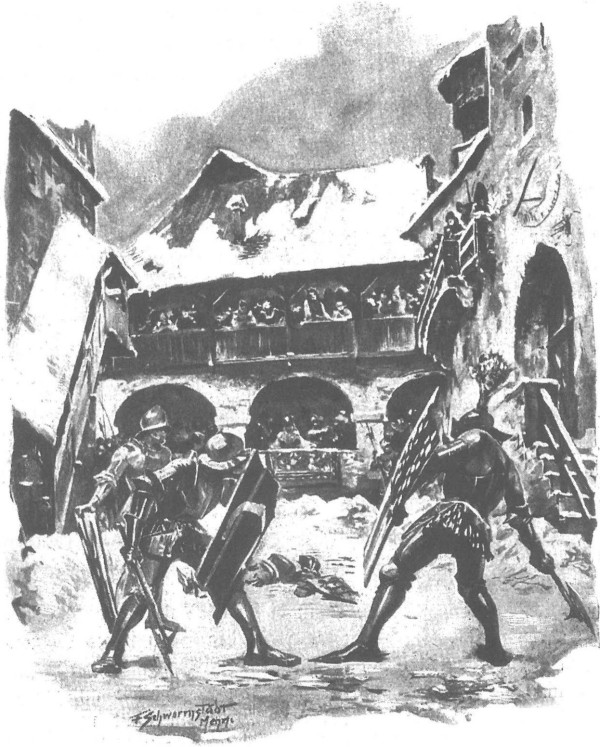

Quận công không phản đối cuộc quyết đấu, bởi theo phong tục thời ấy ngài không thể làm việc đó. Ngài chỉ bắt Rotgier phải viết thư cho đại thống lĩnh và gửi cho Zygfryd de Lӧwe nói rằng chính hắn là người đã tự ném găng tay thách đấu với các hiệp sĩ xứ Mazowsze, hắn sẽ quyết đấu sinh tử với chồng của tiểu thư Jurandówna, người trước đây đã có lần thách đấu với hắn. Gã hiệp sĩ Thánh chiến cũng biện bạch với đại thống lĩnh rằng hắn quyết đấu khi chưa được phép cũng chỉ vì bảo vệ danh dự của Giáo đoàn, để gạt bỏ những nỗi nghi ngờ mà hắn, hiệp sĩ Rotgier, sẵn sàng đem chính máu mình ra để đánh đổi. Bức thư ấy được gửi ngay đến biên giới bởi một gia nhân đi theo gã hiệp sĩ, sau đó được chuyển tới thành Malborg bằng bưu điện [196] - tổ chức mà Giáo đoàn đã thiết lập trên vùng đất của chúng nhiều năm trước mọi người.
Trong khi đó, người ta tiến hành nện mặt tuyết trên sân lâu đài cho cứng, rồi rải tro lên trên, để những kẻ đấu nhau không bị vấp hay trượt chân. Lâu đài nhộn nhịp cả lên. Giới hiệp sĩ và các cung nữ chộn rộn đến nỗi đêm trước cuộc đấu không ai chợp mắt Người ta bảo nhau rằng một trận đấu trên lưng ngựa, dù với giáo hay gươm, thường chỉ kết thúc bằng các vết thương, ngược lại trận đấu trên bộ, nhất là với rìu, bao giờ cũng kết thúc bằng cái chết. Mọi con tim đều đứng về phía Zbyszko, nhưng những ai yêu mến chàng và Danusia hơn cả lại lo lắng gấp bội khi nghĩ tới những lời đồn đại về chiến công và sự thiện chiến của gã hiệp sĩ Thánh chiến. Nhiều thanh nữ đêm ấy ngồi lại trong nhà thờ, là nơi chính Zbyszko cũng thao thức khấn nguyện, sau khi xưng tội trước cha Wyszoniek. Nhìn khuôn mặt gần như thơ trẻ của chàng, các thiếu nữ bảo nhau: “Chàng hãy còn là con trẻ!… Sao nỡ đem đầu cho lưỡi rìu Đức chém đứt hả trời?…” Và họ lại càng khẩn thiết cầu nguyện Chúa hãy giúp cho chàng. Đến rạng đông, khi chàng đứng lên, đĩnh đạc bước qua khám thờ để vào lâu đài mặc giáp phục, thì trái tim họ có thêm phần phấn chấn, vì tuy nét mặt và mái đầu Zbyszko vẫn mang nét trẻ thơ, nhưng thân hình chàng đã lớn và vạm vỡ trước tuổi, như một trang nam nhi lực lưỡng, có thể đấu chọi với bất kỳ người đàn ông hùng mạnh nào.
Trận đấu sẽ diễn ra trên sân lâu đài, chung quanh có các dãy nhà hình cầu bao bọc.
Khi trời sáng hẳn, quận công cùng quận chúa và các con đến ngồi chính giữa các hàng cột, nơi có thể nhìn rõ nhất toàn bộ sân. Các quần thần quyền cao chức trọng, các bậc mệnh phụ cao sang cùng giới hiệp sĩ chiếm những chỗ ngồi cạnh họ. Tất cả các dãy nhà hình cầu đều đông nghẹt, đám bình dân chen chúc trên bờ tường đắp tạm bằng tuyết, một số người bám vào các vọng gác, thậm chí trèo cả lên mái nhà. Và ở đó, đám chúng dân xì xào bàn tán với nhau: “Xin Chúa để người của ta không chịu nhục!”
Hôm ấy là một ngày giá lạnh, ẩm ướt nhưng sáng sủa. Không gian đầy những cánh quạ đen chao lượn, chúng trú ngụ trên các mái nhà và các đỉnh tháp, hốt hoảng trước cảnh huyên náo khác thường, chúng lượn thành vòng tròn, đập cánh rần rật bên trên lâu đài. Trời lạnh mà nhiều người vẫn toát mồ hôi vì hồi hộp. Và khi hồi kèn đầu tiên vang động, báo hiệu hai đấu sĩ ra đấu trường, mọi trái tim đều đập mạnh như trống trận.
Họ bước ra từ hai góc sân đối diện nhau và cùng dừng lại ở rìa đấu trường. Mọi người xem đều nín thở, nhiều người bỗng nghĩ rằng chỉ lát nữa đây thôi, hai linh hồn sẽ bay lên, hướng về ngưỡng cửa phiên tòa phán xử của Chúa Trời, còn hai cái xác sẽ nằm lại trên mặt tuyết - nên những đôi môi, những đôi má hồng của các thiếu nữ đều chợt tái nhợt đi, còn mọi đôi mắt đàn ông đều dán chặt vào hai địch thủ, như ngắm ánh cầu vồng rực rỡ, mỗi người đều muốn đoán qua dáng điệu và giáp phục của hai địch thủ xem phần thắng sẽ thuộc về ai.
Gã hiệp sĩ Thánh chiến mặc một bộ giáp sắt phủ sơn bóng màu xanh, cùng tấm giáp che đùi và một chiếc mũ sắt cùng loại với tấm che mặt bật lên và một chùm lông công tuyệt vời trên chóp mũ. Zbyszko che ngực, hai bên sườn và lưng bằng bộ giáp phục tuyệt hảo kiểu Mediolan mà chàng đã tự tay cướp được trên người bọn hiệp sĩ Fryzja. Đầu chàng đội mũ trụ có tấm che mặt không đóng kín và không có ngù lông, chân khoác giáp da bò. Tay trái của hai người đều đeo khiên có gia huy: trên chiếc khiên của gã hiệp sĩ Thánh chiến phía trên là hình ô rô, phía dưới có ba con sư tử chồm người đứng trên chân sau; còn trên khiên của Zbyszko là một chiếc móng ngựa cùn mòn. Tay phải hai người cầm những chiếc rìu chiến to khủng khiếp, lắp cán gỗ sồi ngả màu đen bóng, dài hơn cả cánh tay người lớn. Xuất trận cùng với họ là hai hộ vệ, chàng Hlava - thường được Zbyszko gọi chệch đi là Glowacz - và gã Van Krist; cả hai đều mặc giáp sắt màu sẫm, cầm rìu và đeo khiên, trong đó khiên Van Krist vẽ hình gia huy là một khóm đậu kim, còn gia huy của chàng Séc giống như gia huy Pomian [197] , chỉ khác là thay cho lưỡi rìu cắm phập vào đầu bò là một thanh đoản kiếm cắm ngập đến nửa vào mắt bò.
Kèn vang tiếng lần thứ hai, sau hồi kèn thứ ba hai địch thủ sẽ lao vào nhau. Hai người lúc này chỉ còn cách nhau một khoảng không gian nhỏ hẹp rắc đầy tro xám, bên trên là loài chim ác của cái chết bay lượn. Nhưng trước khi người ta thổi hồi kèn lệnh thứ ba, Rotgier tiến lại gần các cột chống nơi hai vợ chồng quận công đang ngồi, ngẩng mái đầu bọc trong sắt thép của hắn lên, cất giọng dõng dạc khiến người ngồi ở mọi góc của các dãy nhà hình cầu đều nghe rõ:
- Xin thề với Đức Chúa, có ngài quận công và toàn bộ giới quý tộc của đất nước này làm chứng, tôi không có lỗi gì về dòng máu sắp phải đổ ra nơi đây.
Nghe những lời ấy, mọi trái tim chợt thắt lại lần nữa, khi thấy gã hiệp sĩ Thánh chiến vững tin như thế vào bản thân và vào thắng lợi của mình. Nhưng vốn có tâm hồn giản dị, Zbyszko chỉ quay lại bảo chàng trai người Séc:
- Ta không ngửi nổi sự huênh hoang của gã Thánh chiến, lẽ ra hắn nên nói sau khi ta chết chứ không phải lúc ta đang còn sống.
Thằng cha khoác lác này đang mang ngù lông công trên chóp mũ, còn ta thì đã từng thề sẽ cướp được ba cái ngù lông giống thế kia, rồi sau đó ta lại thề sẽ cướp được số ngù lông bằng số ngón tay của ta, quả là Đức Chúa đã ban hắn cho ta đấy!
- Thưa chủ nhân… - Hlava vừa cúi người vỗ một ít tro xoa tay để cán rìu khỏi bị trượt, vừa hỏi, - nếu Chúa Ki-tô cho tôi hạ thằng oắt người Phổ này trước, thì tôi có được phép giúp chủ nhân không, nếu không bập gã Thánh chiến một nhát thì chí ít cũng phang cho một chiếc cán rìu vào giữa hai đầu gối để hạ gã gục xuống đất?
- Cầu Chúa che chở cho ngươi! - Zbyszko vội vã thốt lên. - Nếu thế, ngươi sẽ mang nhục đến cho ta và cho chính ngươi nữa đấy!
Đúng lúc ấy, hiệu kèn thứ ba vang lên. Nghe kèn hiệu, hai hộ vệ liền nhanh nhẹn và hăng hái nhảy xổ vào nhau, trong khi hai hiệp sĩ nhích lại gần nhau chậm chạp và thận trọng hơn, bởi uy tín và cương vị buộc họ phải hành động như vậy trước khi ra ngón đòn đầu tiên.
Ít ai để mắt đến hai hộ vệ, nhưng nhìn họ, đám đàn ông và những người giàu kinh nghiệm trong dân chúng đều hiểu ngay tức khắc là chàng Hlava có ưu thế hơn hẳn. Lưỡi rìu trong tay tên hộ vệ người Đức vung lên nặng nề hơn, những động tác của chiếc khiên hình tròn mặt lồi vẫn để lộ đôi chân của gã, tuy dài nhưng mảnh khảnh và ít dẻo dai hơn so với đôi chân đồ sộ trong chiếc quần bó chẽn của chàng trai người Séc. Hlava tấn công hăng hái đến nỗi ngay từ phút đầu, Van Krist gần như đã phải bước lui. Người ta thấy một địch thủ lao vào kẻ kia như cơn bão, dồn ép, chém, phạt ngang nhanh như sấm sét, còn kẻ kia như cảm thấy thần chết đang chực sẵn trên đầu nên chỉ cố sức chống đỡ, để làm chậm bớt giây phút hãi hùng ấy mà thôi. Và quả đúng như thế. Gã hộ vệ khoác lác, chỉ giáp chiến khi không thể làm gì khác hơn được nữa, nhận ngay ra rằng những lời nói hớ hênh đã đưa gã đến chỗ phải đấu với một lực sĩ khủng khiếp, mà lẽ ra gã phải tránh như tránh chính cái chết. Lúc này, khi cảm nhận mỗi một nhát rìu bổ xuống đều có thể hạ gục một con bò mộng, trái tim của gã chợt hoảng loạn. Gã quên mất rằng khi chiến đấu không những phải dùng khiên để đỡ những nhát đòn mà còn phải dùng rìu để chém. Trông thấy những đường rìu loang loáng trên đầu, gã cứ ngỡ nhát nào cũng sẽ là nhát cuối cùng. Vừa đưa khiên lên đỡ, bất giác gã vừa nhắm nghiền mắt lại vì kinh hoàng, e rằng không chắc còn có thể mở mắt ra được nữa hay chăng. Thỉnh thoảng lắm gã mới ra được một đòn, mà chính gã cũng không hy vọng là sẽ chạm được vào người đối thủ, càng ngày gã càng giơ khiên lên cao hơn, để che chở và bảo vệ cái đầu.
Rốt cuộc gã bắt đầu thấy mệt, trong khi chàng trai người Séc bổ rìu mỗi lúc một khủng khiếp hơn. Dưới những nhát đòn của chàng trai người Séc, những tấm thép từ giáp phục của gã hộ vệ người Đức cũng thay nhau gãy vụn và rơi lả tả như những vụn gỗ lớn bắn tung tóe từ một cây thông cổ thụ đang bị lưỡi rìu của nông phu chặt mạnh. Mép trên của chiếc khiên cong vẹo vọ và gãy nát, tấm giáp che vai phải rơi tuột ra, đai đeo bị chém đứt và dính máu rớt xuống đất Tóc trên đầu Van Krist như dựng ngược, gã sợ cuống cả lên. Gã cố lấy sức choảng một đòn, rồi đòn nữa vào chiếc khiên của chàng trai người Séc, và khi nhận thấy không còn cách gì cứu mạng nữa trước sức mạnh kinh người của địch thủ trừ việc liều mình cố cùng, hắn đột ngột lao mạnh vào chân Hlava với toàn bộ trọng lượng của giáp phục và thân thể.
Cả hai cùng ngã lăn ra đất, ôm ghì lấy nhau, lăn lộn, xoay tròn người trên tuyết. Nhưng chẳng mấy chốc chàng trai Séc đã nằm trên, chàng mất thêm ít thời gian kìm chặt những động tác tuyệt vọng của đối thủ, rồi dùng một đầu gối ấn chặt vào tấm lưới thép đang che bụng hắn, chàng rút soạt thanh đoản kiếm cực ngắn có tiết diện hình tam giác từ thắt lưng ra.
- Xin đừng giết! - Van Krist khẽ thì thào, ngước mắt lên nhìn vào mắt chàng trai Séc.
Nhưng thay vì trả lời, chàng xoài người đè lên mình hắn để có thể dễ dàng chạm tay tới cổ hắn, cắt đứt phăng chiếc đai giữ mũ sắt dưới cằm, đâm cho kẻ bất hạnh hai nhát vào cổ, hướng mũi dao nhọn về phía dưới, chính giữa ngực.
Đôi tròng mắt của Van Krist lộn sâu vào trong, tay chân gã đập vào tuyết như thể muốn rũ sạch tro đi, nhưng chỉ lát sau gã ưỡn thẳng người bất động, đôi môi phì đầy bọt đỏ bầm thưỡn ra cùng dòng máu tuôn tràn như xối.
Chàng trai người Séc đứng lên, lau lưỡi đoản kiếm vào áo gã người Đức, rồi dựng chiếc rìu lên, đứng tựa vào cán rìu, bắt đầu ngắm trận chiến đấu khủng khiếp và gay go, dằng dai hơn giữa vị hiệp sĩ chủ nhân của chàng với gã đồng đạo Rotgier.
Trong khi các hiệp sĩ phương Tây đã quen với tiện nghi và phong lưu đầy đủ, thì các “ông chủ” ở Małopolska, Wielkopolska hay Mazowsze vẫn sống theo lối nguyên thủy đầy khắc nghiệt, vì vậy họ khiến cho những người nước ngoài ít thiện cảm với họ cũng phải thán phục bởi vẻ rắn chắc của cơ thể và khả năng chịu đựng dẻo dai những nỗi nhọc nhằn dai dẳng hoặc quyết liệt. Lúc này cũng vậy, Zbyszko tỏ rõ hơn hẳn gã Thánh chiến về phương diện sức mạnh của tay chân, chẳng khác hộ vệ của chàng vượt trội hẳn Van Krist, song do tuổi còn trẻ, chàng có phần thua kém hắn về võ nghệ.
Việc chọn cách đấu rìu phần nào đó có lợi cho Zbyszko, bởi loại vũ khí này không đòi hỏi nhiều kỹ thuật, chứ nếu đấu bằng đoản gươm hay trường kiếm thì gã hiệp sĩ người Đức ắt có lợi thế hơn, bởi cần phải biết rõ những đường chém, lối đâm, để hiểu cách đánh trả đối phương. Qua những đường rìu và cách sử dụng khiên, bản thân Zbyszko cũng như khán giả đều nhận ngay ra rằng đối thủ của chàng là một hiệp sĩ dày dạn kinh nghiệm và rất dáng sợ, không phải lần đầu chấp nhận những cuộc chiến đấu tay đôi thế này. Cứ mỗi nhát bổ của Zbyszko, Rotgier lại đưa khiên đỡ và hơi nhích lùi mặt khiên một chút đúng lúc lưỡi rìu sắp chạm vào, vì thế dù rìu bổ mạnh đến đâu cũng bị mất sức công phá, không thể chém đứt hay làm sứt mẻ mặt khiên bóng nhoáng của hắn. Đôi khi hắn thụt lùi, đôi khi lấn tới, lúc khoan thai, lúc nhanh thoăn thoắt, khiến mắt thường khó theo kịp những động tác của hắn. Quận công lo cho Zbyszko, vẻ mặt của cánh đàn ông sa sầm lại, bởi họ nhận thấy hình như gã hiệp sĩ người Đức cố tình vờn Zbyszko. Có lúc thậm chí gã không đưa khiên ra đỡ, nhưng khi Zbyszko giáng lưỡi rìu xuống, gã lại xoay người nửa vòng khiến cho lưỡi rìu phạt vào chỗ trống. Điều đó rất đáng sợ, bởi khi ấy Zbyszko có thể bị mất thăng bằng ngã xuống và chắc chắn sẽ mất mạng. Thấy thế, chàng trai Séc đang đứng bên cái xác của Van Krist cũng thấy lo, thầm tự nhủ: “Lạy Chúa tôi, nếu chủ nhân bị ngã, thể nào mình cũng phải phang cho thằng Đức một rìu hóa kiếp nó!”
Nhưng Zbyszko không ngã, bởi đôi chân chàng cực kỳ vững chãi, lại được giạng khá rộng, đủ để trụ vững trong mọi động tác, chống đỡ toàn bộ trọng lượng cơ thể và đà vung.

Cứ mỗi nhát bổ của Zbyszko, Rotgier lại đưa khiên đỡ
Rotgier nhận ngay ra điều đó, và khán giả đã lầm khi tưởng rằng hắn coi thường địch thủ. Ngược lại, sau những nhát chém đầu tiên, mặc dù đã lùi khiên một cách thiện nghệ mà vẫn cảm thấy cánh tay bị tê dại đi, hắn hiểu ngay rằng cuộc chiến đấu với chàng trai trẻ này sẽ là một thử thách hết sức gay go, nếu không dùng mưu để quật ngã chàng thì trận chiến có thể sẽ kéo dài, nguy hiểm cho hắn. Hắn ngỡ rằng khi chém trượt vào chỗ trống, Zbyszko sẽ bị ngã vì mất đà, nhưng khi điều đó không xảy ra, hắn bắt đầu thấy lo ngại. Từ dưới tấm che mặt bằng thép nhìn ra, thấy rõ đôi môi đang mím chặt và cánh mũi hóp lại cùng đôi mắt lóe sáng của địch thủ, hắn nghĩ rằng càng đấu, đối thủ sẽ càng hăng máu, sẽ bốc đồng, mất tỉnh táo, và trong cơn cuồng nộ mù quáng sẽ chỉ nghĩ đến việc ra đòn nhiều hơn là tự vệ. Nhưng cả về điều này, hắn cũng đã lầm. Zbyszko không biết cách xoay người nửa vòng để tránh đòn, nhưng chàng không hề quên chiếc khiên, và mỗi khi vung rìu để bổ xuống, chàng không để lộ thân mình quá mức cần thiết. Biết rõ kinh nghiệm và tài nghệ của địch thủ, sự chăm chú của chàng đã được nhân lên gấp bội, chàng không hề bốc đồng mà lại hết sức tập trung, thận trọng hơn, và những nhát chém ngày càng kinh khủng của chàng dường như cân nhắc, chín chắn hơn, nảy sinh từ một ý chí cương quyết đến lạnh lùng.
Đã trải qua không ít cuộc chiến tranh, từng vượt biết bao trận đấu tập thể hoặc cá nhân, từ kinh nghiệm của bản thân, Rotgier hiểu rằng trên thế gian có những người như loài ác điểu được sinh ra chỉ để đánh nhau, được trời đất phú cho những khả năng đặc biệt để có thể đoán trước tất cả những gì mà kẻ khác phải vất vả bao tháng năm luyện tập mới đạt đến, và lúc này hắn hiểu ngay rằng hắn đang gặp phải một người như thế. Ngay từ những ngón đòn đầu tiên, hắn đã thấy ở chàng trai còn trẻ măng này có nét gì đó của một con chim ưng, luôn nhìn đối thủ chỉ là con mồi của mình, không nghĩ gì khác ngoài việc làm sao quặp móng được vào con mồi ấy. Và mặc dù có sức lực hơn người, hắn vẫn cảm thấy kém sức hơn Zbyszko, nếu hắn kiệt sức trước khi ra ngón đòn quyết định, thì cuộc chiến đấu với chàng trai kinh khủng dẫu ít kinh nghiệm này sẽ là cuộc chiến cuối cùng, mang cái chết đến cho hắn. Cân nhắc thế, quyết định sẽ cố gắng tiết kiệm sức nhất có thể, hắn thu bớt khoảng cách của chiếc khiên che mình, không tiến nhanh quá, cũng không lùi gấp quá, cố gắng hạn chế cử động, tập trung toàn bộ sức mạnh tinh thần và cánh tay dồn cho đòn quyết định mà hắn cố chờ cơ hội thuận tiện.
Cuộc đấu kinh khủng ấy kéo dài quá lệ thường. Một bầu không khí im lặng chết chóc bao trùm các dãy nhà hình cầu. Thỉnh thoảng chỉ nghe thấy những tiếng va đập, khi thì âm vang, khi thì trầm đục của lưỡi rìu đập vào khiên. Cảnh tượng này không xa lạ gì đối với quận công và quận chúa, với giới hiệp sĩ, với các cung nhân, nhưng lần này vẫn có một cảm giác kinh hoàng kỳ lạ, như có một gọng kìm sắt đang bóp chặt mọi trái tim. Người ta hiểu rằng ở đây không phải là chuyện biểu diễn sức mạnh, tài nghệ, lòng can đảm, mà trận quyết đấu này chất chứa biết bao nỗi tuyệt vọng, lòng căm thù không khoan nhượng và ý chí cương quyết trả thù. Một bên là những điều xúc phạm kinh khủng, tình yêu và nỗi thương tiếc vô bờ, còn bên kia là thanh danh của cả Giáo đoàn và sự hằn thù sâu sắc - cả hai cùng bước ra mảnh sân này để cầu xin sự phán xử của Chúa.
Lúc ấy, buổi sáng mùa đông nhợt nhạt đã phần nào rạng ra chút ít, làn sương mù xám xịt dần thưa bớt và ánh mặt trời chiếu vào bộ giáp phục màu xanh biếc của gã hiệp sĩ Thánh chiến cùng chiếc áo giáp Mediolan trắng bạc của Zbyszko. Chuông khám thờ điểm, báo chín giờ sáng, giờ của buổi nguyện thứ hai trong ngày, và cùng với tiếng chuông, một đàn quạ đen chợt bay vụt lên từ các mái nhà của lâu đài, đập cánh sầm sập và kêu lên những tiếng quang quác đến inh ỏi, như vui sướng trước cảnh máu đổ và cái thây đang nằm bất động nơi kia trên tuyết trắng. Một đôi lần trong lúc đang đánh nhau, Rotgier liếc mắt về cái xác và bỗng dưng hắn cảm thấy cô độc kinh khủng. Mọi ánh mắt đang nhìn hắn lúc này đều là ánh mắt của kẻ thù. Mọi lời khấn nguyện, cầu chúc và những hứa hẹn lễ vật dâng hiến mà các tiểu thư đang khẽ lẩm nhẩm kia đều dành cho Zbyszko. Ngoài ra, tuy gã Thánh chiến hoàn toàn tin chắc rằng viên hộ vệ của Zbyszko sẽ không đánh sau lưng hắn, cũng không hạ hắn bằng đòn ngầm, nhưng sự có mặt gần gũi của con người dữ tợn ấy bất giác vẫn khiến hắn cảm thấy lo sợ, nỗi lo sợ của một người khi gặp phải chó sói, gấu hay bò tót mà lại thiếu song sắt bảo vệ. Hắn không sao thoát khỏi sự ám ảnh của mối lo sợ đó, nhất là vì muốn theo dõi diễn biến của trận đấu, chàng trai người Séc luôn luôn di động và đổi chỗ, lúc bên sườn, lúc sau lưng, lúc trước mặt, chàng ta cứ cúi đầu, nhìn hắn với vẻ hung tợn qua khe mắt ở tấm che mặt của mũ sắt, thỉnh thoảng như tình cờ chàng lại giơ cao lưỡi rìu sắc lẹm còn vấy máu.
Rốt cuộc, sự mệt mỏi bắt đầu tác động đến gã Thánh chiến. Hai lần liền, hắn giáng hai đòn ngắn nhưng mạnh khủng khiếp vào vai phải Zbyszko, nhưng chàng đã lấy khiên gạt, mạnh đến nỗi cán rìu rung chuyển trong tay Rotgier, khiến hắn lại phải lùi lại ngay để khỏi ngã. Kể từ lúc đó hắn lùi bước liên tục. Không chỉ sức lực mà cả sự nhẫn nại và bình tĩnh của hắn cũng bắt đầu cạn. Thấy hắn lùi, từ lồng ngực khán giả bật ra vài tiếng kêu như mừng thắng lợi khiến hắn thêm bực tức và tuyệt vọng. Những nhát rìu bổ xuống mỗi lúc một dày đặc hơn. Mồ hôi chảy ròng ròng trên trán hai địch thủ, hơi thở hổn hển bật ra từ đôi hàm răng nghiến chặt. Người xem không còn giữ được bình tĩnh nữa, chốc chốc lại có tiếng đàn ông hoặc đàn bà kêu lên: “Đánh đi! Nện vào hắn!… Chúa phán xét đấy! Hình phạt của Chúa đấy! Chúa sẽ tiếp sức cho chàng!” Quận công phẩy tay mấy lần bắt những tiếng kêu ấy im đi, nhưng ngài cũng không sao kìm hãm nổi. Những tiếng kêu, tiếng reo mỗi lúc một to hơn, lũ trẻ cũng bắt đầu kêu khóc đây đó trên những dãy nhà hình cầu, và sau rốt, ngay sát cạnh quận chúa, giọng nói trẻ trung nghẹn ngào của một thiếu nữ vang lên:
- Vì Danusia, Zbyszko! Vì Danusia!…
Thì Zbyszko vẫn hiểu là vì Danusia! Chàng tin chắc rằng tên hiệp sĩ Thánh chiến này có nhúng tay vào việc bắt cóc Danusia, và chàng đánh nhau với hắn là để rửa hận cho nàng. Nhưng vốn là một chàng trai trẻ ham mê chinh chiến, khi đang đánh nhau chàng chỉ nghĩ đến trận đấu mà thôi. Tiếng kêu kia đã đột ngột nhắc chàng nhớ rằng đã bị mất nàng, rằng nàng đang đau khổ. Tình yêu, lòng thương tiếc và căm thù như cùng một lúc rót lửa nóng vào máu chàng. Trái tim chàng muốn thét lên trong nỗi đau ghê gớm vừa được đánh thức, khiến chàng rơi vào cơn điên chiến trận.
Gã hiệp sĩ Thánh chiến không còn đủ sức đỡ những nhát chém mãnh liệt như bão táp của chàng. Zbyszko đập mạnh khiên vào chiếc khiên của hắn với một sức mạnh kinh người, khiến cánh tay của tên Đức bỗng tê bại hẳn và thõng thượt buông xuôi. Kinh sợ thảng thốt, hắn giật lùi, ngả người về phía sau, đúng lúc ấy mắt hắn chợt lóe lên ánh chớp của lưỡi rìu và lưỡi thép bổ mạnh như sét vào vai phải hắn.
Một tiếng kêu kinh hoàng thảng thốt: “Chúa ơi!…” vang tới tai khán giả, Rotgier cố bước thêm một bước nữa, rồi ngã ngửa ra đất.

Gã Hiệp sỹ thánh chiến giật lùi, người ngả về phía sau
Những dãy nhà hình cầu náo động hệt như những đõ ong khi đàn ong được ánh mặt trời sưởi ấm bắt đầu vỗ cánh. Những đám đông hiệp sĩ chạy vội xuống các bậc thang, dân chúng ào ào nhảy qua bờ tuyết đắp để lao tới nhìn các xác chết. Khắp nơi vang động tiếng kêu: “Ôi! Đúng là tòa phán xử của Chúa!… Ngài hiệp sĩ Jurand có người nối nghiệp rồi! Hãy ngợi ca và tạ ơn chàng! Thật là một tráng sĩ dụng rìu dũng mãnh!” Những người khác thì thốt lên: “Trông này! Có khiếp không! Ngay cả ông Jurand cũng không thể chém đẹp hơn được nữa!” Cả một đám rất đông những kẻ hiếu kỳ đứng quanh xác Rotgier, trong khi hắn nằm ngửa, mặt nhợt như màu tuyết, mồm há to, một bên vai đẫm máu sau nhát chém kinh khủng xả dài từ cổ đến gần sát nách khiến vai gần như rời hẳn ra, chỉ còn dính lại bởi mấy sợi gân. Một số người đã thốt lên: “Đấy, khi sống thì hắn nghênh ngang ngạo ngược trên đời, bây giờ thì không còn động nổi một ngón tay!” Vừa thốt lên những lời như thế, họ vừa thán phục ngắm tầm vóc cao lớn của hắn, chiếm cả một khoảng rộng trên đấu trường, và khi chết nom hắn còn to lớn hơn. Những kẻ khác thì ca ngợi chỏm lông công óng ánh nhiều màu trên mặt tuyết, còn loại người thứ ba thì lại thích thú trước bộ áo giáp được người ta đánh giá cao. Chàng trai người Séc Hlava cùng với hai gia nhân khác của Zbyszko tiến đến cởi bộ giáp sắt của kẻ vừa tử trận, thế là những kẻ tò mò lại kéo tới xúm quanh Zbyszko, hết lời ca ngợi và tâng bốc chàng, bởi họ cho rằng niềm vinh quang của chàng sẽ soi sáng toàn giới hiệp sĩ vùng Mazowsze và toàn Ba Lan. Người ta tháo khiên và mang rìu chiến của chàng đi, hiệp sĩ Mrokota xứ Mocarzewo tháo mũ sắt cho chàng, mái tóc chàng đẫm mồ hôi, dính bết cả vào chiếc mũ lót bằng dạ đỏ thắm. Zbyszko như còn bàng hoàng, chàng thở nặng nhọc, đôi mắt vẫn chưa nguội lửa, mặt vẫn còn nhợt nhạt vì quá gắng sức và vì nỗi căm thù, cả người run run vì xúc động và mệt mỏi. Người ta đỡ tay chàng dẫn tới trước mặt ông bà quận công đang đợi trong một căn phòng rất rộng, bến lò sưởi ấm áp. Zbyszko quỳ gối trước mặt hai người, và sau khi linh mục Wyszoniek làm dấu thánh cho chàng rồi đọc kinh “An nghỉ đời đời” cho linh hồn những kẻ vừa qua đời, quận công liền ôm ghì lấy đầu chàng hiệp sĩ trẻ, thốt lên:
- Đức Chúa cao minh đã xét xử các ngươi và đã dẫn dắt cánh tay ngươi đó, cầu cho tên tuổi của Người được sáng láng đời đời, amen!
Rồi quay sang hiệp sĩ de Lorche và các hiệp sĩ khác, ngài nói thêm:
- Có ngài đây, hỡi vị hiệp sĩ ngoại quốc, và tất cả các khanh đang có mặt tại đây, hãy làm chứng cho điều mà chính ta sẽ tuyên bố: họ đã đấu theo đúng luật lệ và quy tắc, tòa phán xử của Chúa đã được tiến hành như các tòa phán xử khác ở khắp nơi, theo ý Chúa và theo tinh thần hiệp sĩ.
Các chiến binh địa phương đồng thanh reo lên vang động, và khi được người ta dịch cho nghe những lời của quận công, hiệp sĩ de Lorche liền tuyên bố rằng không những chàng chỉ làm chứng rằng cuộc đấu đã được diễn ra theo ý Chúa và theo tinh thần hiệp sĩ, mà nếu có kẻ nào ở thành Malborg hay một triều đình quận công nào khác dám nghi ngờ điều đó dù đó là một hiệp sĩ thường tình, là khổng lồ hay phù thủy, hoặc chính lão Merlin pháp thuật cao siêu - thì chàng, de Lorche này, sẽ lập tức thách hắn bước ra đấu trường để đấu sinh tử, trên bộ hay trên ngựa.
Lúc Zbyszko cúi ôm chân bà, quận chúa Anna Danuta liền nghiêng người bảo chàng:
- Sao con không vui? Hãy vui lên và tạ ơn Chúa đã nhân từ cứu con thoát khỏi hiểm họa này, hẳn Người sẽ chẳng chối bỏ con đâu và sẽ dẫn dắt con tới bến bờ hạnh phúc.
Zbyszko đáp:
- Muôn tâu lệnh bà, con đâu thể vui được! Chúa đã cho con được thắng và trả thù tên hiệp sĩ Thánh chiến kia, nhưng nào ai biết Danusia ở nơi đâu, nàng vẫn xa cách con y như trước, vì việc này chẳng hề làm con được gần nàng hơn.
- Những kẻ thù cay độc nhất: Danveld, Gotfryd và Rotgier đã chết, - quận chúa bảo, - còn về lão Zygfryd thì người ta đồn rằng tuy rất tàn bạo nhưng lão vốn công bằng hơn bọn khác. hãy ngợi ca lòng nhân từ của Chúa. Hiệp sĩ de Lorche đã nói rằng nếu gã Thánh chiến tử trận thì chàng sẽ mang thi hài của hắn đi, sau đó chàng sẽ đến thành Malborg xin gặp chính đại thống lĩnh để đề nghị về việc Danusia. Bọn chúng sẽ chẳng dám không tuân lời đại thống lĩnh đâu.
- Xin Chúa ban sức khỏe cho hiệp sĩ de Lorche, - Zbyszko thốt lên, - con cũng sẽ đi cùng chàng tới thành Malborg.
Quận chúa hoảng hốt trước lời chàng nói, như thể bà nghe Zbyszko bảo sẽ tay không xông vào giữa bầy sói đói đang tụ tập thành từng đàn lớn trong những khu rừng đại ngàn hoang vắng của Mazowsze vậy.
- Để làm gì? - Bà kêu lên. - Để mất mạng sao? Ngay lúc con đến nơi thì hiệp sĩ de Lorche cũng chẳng thể giúp được, cả những bức thư Rotgier viết trước trận đấu cũng chẳng cứu nổi mạng con đâu. Con sẽ không cứu được ai, mà lại phải chịu thiệt mạng đó.
Nhưng chàng trai đã đứng lên, đặt cả hai tay lên thánh giá mà nói:
- Xin Chúa hãy giúp con, con sẽ tới tận thành Malborg, hoặc vượt cả sang bên kia biển lớn. Xin Chúa Ki-tô ban phước lành để con đi tìm nàng không ngừng không nghỉ, đến tận hơi thở cuối cùng, tới khi gục ngã. Con sẽ đánh nhau với bọn Đức, vì với con thà mặc giáp đấu nhau với chúng còn dễ hơn là chịu để cô gái mồ côi phải rên xiết trong hầm ngục. Ôi! Dễ hơn, dễ hơn nhiều lắm!
Cũng như mọi lần khi nhắc tới Danusia, chàng thớt lên những lời đó trong sự bồng bột, trong nỗi đau đớn ghê gớm, khiến đôi lúc lời nói đứt đoạn như thể chàng bị ai bóp chặt cổ họng. Quận chúa hiểu rằng thuyết phục chàng sẽ vô ích, muốn giữ chân có lẽ chỉ còn cách cùm chàng lại nhốt vào hầm giam mà thôi.
Nhưng Zbyszko không thể ra đi ngay lập tức. Thời bấy giờ hiệp sĩ có thể không hay để ý đến những khó khăn cản trở, nhưng lại không có quyền vi phạm phong tục của giới mã thượng, mà phong tục đó buộc những người đã thắng trong cuộc đấu tay đôi phải có mặt tại nơi đấu suốt cả ngày hôm đấu đến tận nửa đêm hôm sau để chứng tỏ rằng mình đích thực là chủ nhân của đấu trường, đồng thời để chứng tỏ mình sẵn sàng chấp nhận tiếp tục chiến đấu nếu có họ hàng hay bè bạn nào đó của kẻ thua muốn thách thức. Phong tục ấy còn được ngay cả những đạo quân lớn tuân thủ, đôi khi sẽ gây bất lợi, vì đã không nhanh chóng rút lui sau chiến thắng. Zbyszko không hề định làm trái luật, nên sau khi ăn chút ít, chàng mặc giáp ngồi lì ở sân lâu đài cho đến tận nửa đêm, dưới vòm trời mùa đông u ám, chờ đợi một kẻ địch có thể đến từ bất cứ nơi nào.
Mãi đến đúng nửa đêm, khi các viên tướng lệnh thổi kèn hiệu vang động chính thức công bố chàng đã thắng cuộc, hiệp sĩ Mikołaj mới ra sân mời chàng dùng bữa tối rồi cùng đến gặp quận công để nghị bàn.